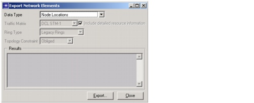

Importing and Exporting Data > Export Procedure
Export Procedure
You can export data to external text files. For information about available file types and formats, see Data File Formats.
Procedure 5-2 Exporting Network Data to a Text File
- In SP Guru Transport Planner, choose File > Export > Network Elements.
The Export Network Elements dialog box appears.
Figure 5-3 Export Network Elements Dialog Box

- Select the type of data you want to export in the Data Type pull-down menu.
- You might need to specify additional options for some types of data:
- Click the Export button to open the file browser, then specify the directory and file name.
- Click OK in the file browser to confirm the file selection.
End of Procedure 5-2
| Home © 1987-2007 OPNET Technologies, Inc. All Rights Reserved. This software may be covered by one or more U.S. Patents. See complete patent notice in the Legal Notices section. OPNET Support Center |